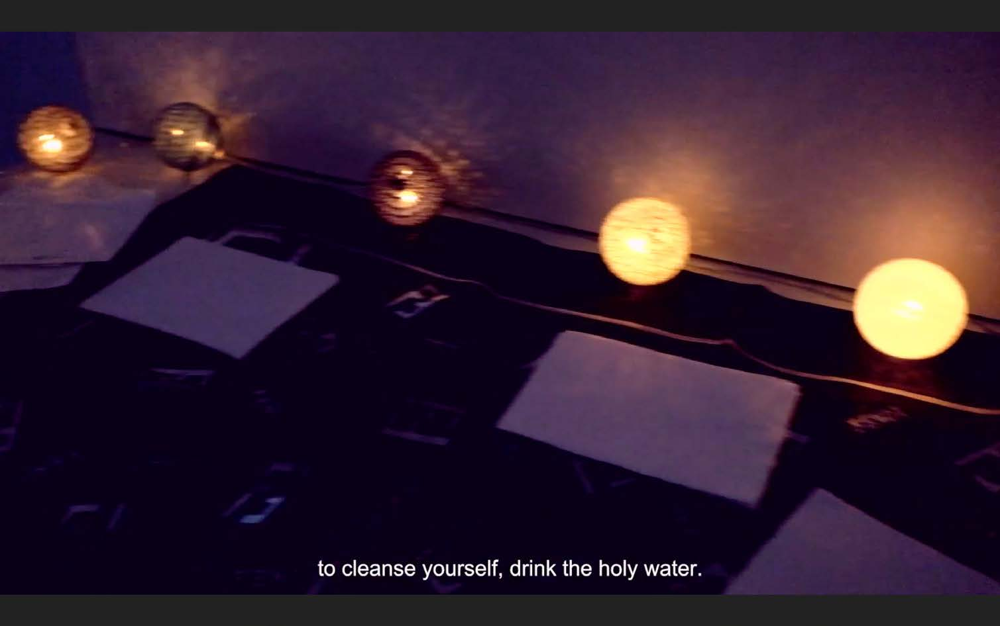
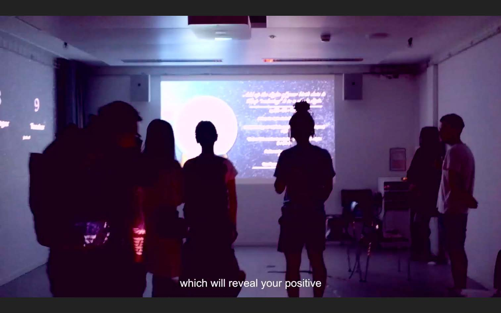
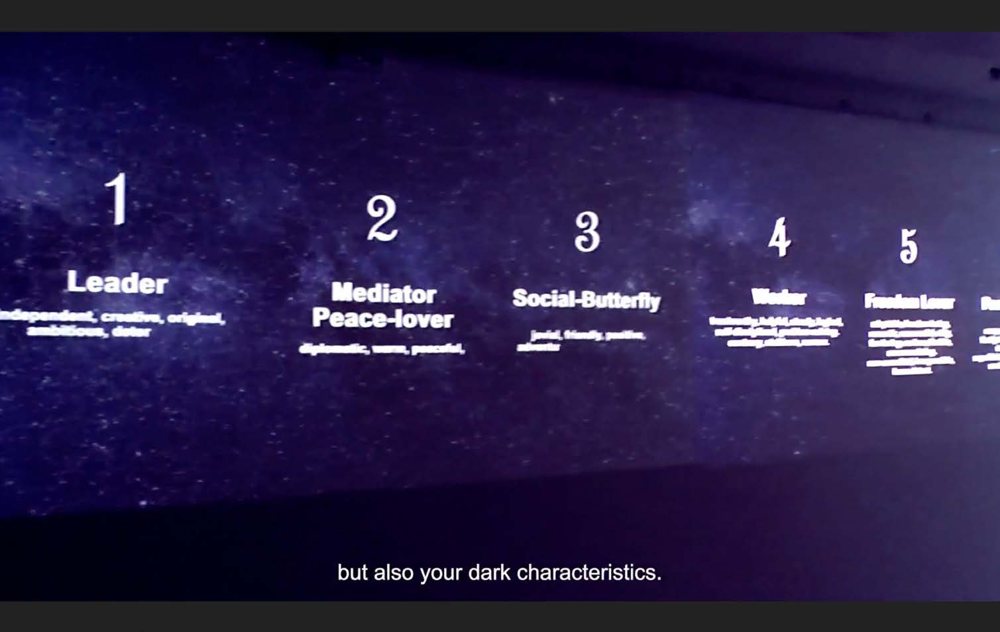

Fortune Telling
Immersive Art Installation
2018/08
Transcultural Collaboration: Spoken/Unspoken
Zurich University of the Arts, Switzerland
Young people are increasingly turning to fortune tellers for help. The increasing interest in Fortune telling may be interpreted as a basic need in the human condition but could also as a cultural and social symptom of a society questioning the roots of its technological pragmatism, a society in search of its personal and human identity. It might also be viewed as a symptom of a society that has lost faith in science and medicine seeking out alternative healing and knowledge from Fortune telling and other Occult rituals.
This works aim to explore the viewers own relationship with Fortune telling. Is it real? Is there something to it? Whether he or she believes it or not, we leave it up to each individual to interpret on their own.
Collaborated with Vivian Chan, Wen Qing Kwek, Mei Yan Miley Wong, Ingjerd Ytterdal Holten
Project Website: https://www.transculturalcollaboration.com/fortune-telling



